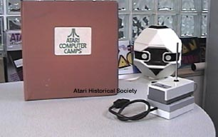

Atari had many dealings with Androbots, Inc. Androbots was a company that was part of what was called the Catalyst group. Catalyst were hi-tech company's funded by Nolan Bushnell, Atari's founder. Although the original TOPO 1 and TOPO 2 robots were primarily designed for use with Apple ][ computers, Androbots and Atari teamed up to design SIO interfaces and a special version of Atari LOGO to allow the use of Androbot TOPO 1 robots to be controlled by Atari computers (The 1200XL would not work without the SIO power modification). These robots were to be used in Atari's computer camps as learning tools for teaching basic programming skills with LOGO. This was all done under the "Atari Special Projects" group.
Atari then began work with Androbots to create an all new product called
Androman. This would be an interactive real-time video game
for the Atari 2600 VCS. The system would consist of two parts:
the first part would be the video game played on the VCS, the second part
would be the actual 8" high Androman (later to be renamed Atariman) robot
which would move across a plastic mat with a lunar landscape called an
"Androscape" and the goal was to maneuver both the on screen robot and
the real robot through the terrain in the least amount of time to gain the
highest score.
CLICK IMAGE TO ENLARGE
This is a Polaroid shot of an actual FCC bench testing of the Androman prototype.
Note the stalk to the left of the robot, it appears to be an IR transceiver stalk, meant
to control the Androman robot.
CLICK IMAGE TO ENLARGE
Atari had its own FCC testing room where it conducted through testing
of its products through development and production phases.
This is a copy of an early January 1984 test result of the Androman standing still.
Original
Androbot Pre-release
Schematics
of the TOPO I & TOPO II
Robots.
(Requires Adobe Acrobat 3.0 or higher)
{kind=link}
{kind=link}